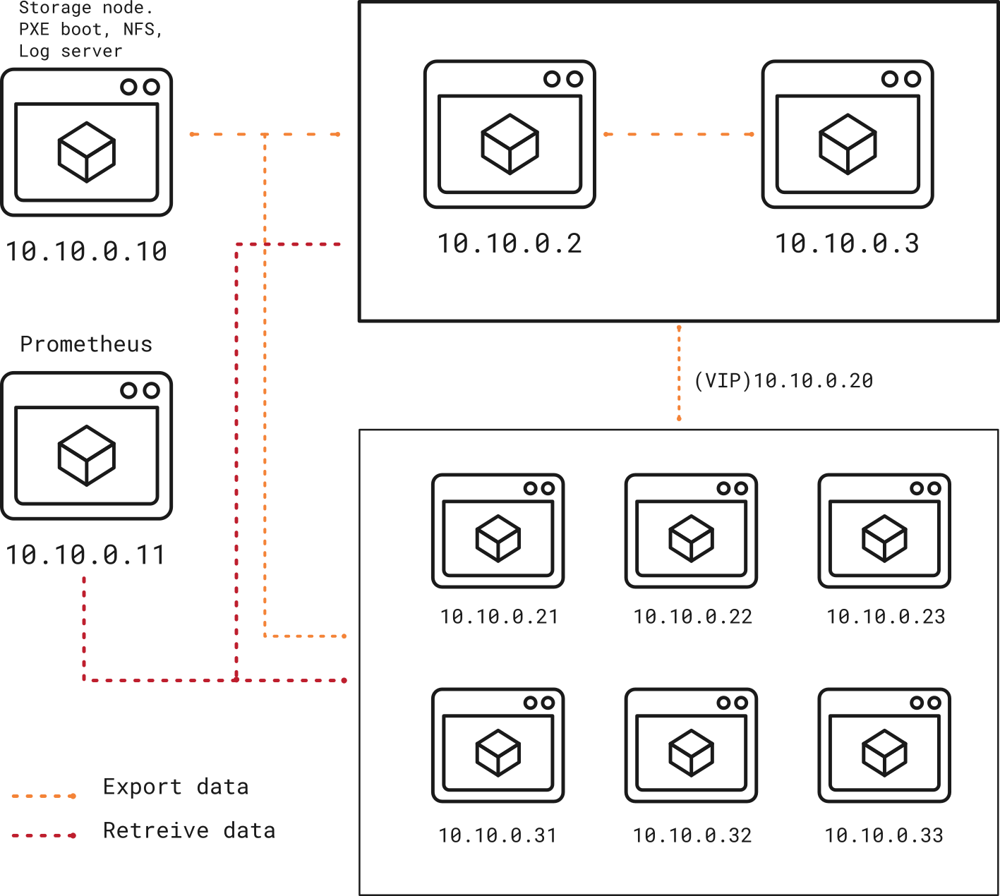

Building a Homalab with KVM and Kubernetes: An Overview
--
06 Apr 2023 Tue
1 Introduction
I'm planning to build a highly available Kubernetes homelab cluster that consists of three control plane nodes and three worker nodes (this can change overtime). The control plane nodes will be responsible for managing the Kubernetes cluster, while the worker nodes will run the workloads.
The main reason for building this homelab is to help me to test and learn new technologies that I'm interested in, as well as the ones that I need for work. In addition, I need it to be fully automated so that I can provision new VMs quickly if necessary.
To centralize the configuration as much as possible, I will be using Packer to create my VMs and Ansible for configuration management. The ultimate goal is to create an ephemeral sandboxes that can be easily disposed of and replaced, allowing for experimentation.
2 Tools and technologies
Each node will have SELinux in enforcing mode.
Firewalld will also be enabled on all the nodes to provide an additional layer of network security.
The two admin nodes will serve as the main DNS and DHCP servers for the entire homelab, and we will use HAProxy and Keepalived to provide high availability for the control plane nodes.
To provide storage for the cluster, we will dedicate another node as an NFS server. This node will also be utilized as a log server, helping to centralize all the logs in one location for easier management and troubleshooting.
To make the process of provisioning new nodes easier, I will create custom base images for Ubuntu server and RockyLinux using Packer. These images will include essential configurations like (SSH, network settings, users…etc) making it easier to provision new nodes in the future.
3 Architecture
For a quick summary of the cluster details, please refer to the table below.
| Name | Hostname | IP Address | RAM (MB) | CPUs | Software |
|---|---|---|---|---|---|
| admin1 | admin1.hl.test | 10.10.0.2 | 1024 | 1 | DNS/DHCP/HAProxy/Keepalived |
| admin2 | admin2.hl.test | 10.10.0.3 | 1024 | 1 | DNS/DHCP/HAProxy/Keepalived |
| storage | storage.hl.test | 10.10.0.10 | 1024 | 1 | NFS / Log server |
| master1 | master1.hl.test | 10.10.0.21 | 2048 | 2 | |
| master2 | master2.hl.test | 10.10.0.22 | 2048 | 2 | Kubernetes |
| master3 | master3.hl.test | 10.10.0.23 | 2048 | 2 | |
| worker1 | worker1.hl.test | 10.10.0.31 | 2048 | 2 | |
| worker2 | worker2.hl.test | 10.10.0.32 | 2048 | 2 | Kubernetes |
| worker3 | worker3.hl.test | 10.10.0.33 | 2048 | 2 |
Here's the homelab diagram for our setup.
These are the admin nodes, one serving as the master node IP: 10.10.0.2 and the other as the slave node IP: 10.10.0.3.
Both nodes are equipped with DNS, DHCP, HAProxy and Keepalived services installed and configured, which ensures continuous service availability and failover capabilities.
The nodes are configured with a virtual IP: 10.10.0.20, which provides a single IP address to contact with.
My Kubernetes cluster will consist of 6 Nodes in total 3 of these nodes will act as Master nodes 10.10.0.21-23.
While the other 3 as worker nodes 10.10.0.31-33.

Figure 1: Homelab diagram
This was an overview of my homelab plan. In the following blog posts I will provide detailed setup and configuration guides for each component of the homelab.
4 VM Setup Guides
This was an overview of my homelab plan. The links below provide detailed setup and configuration guides for each component of the homelab.
- Admins
- Kubernetes